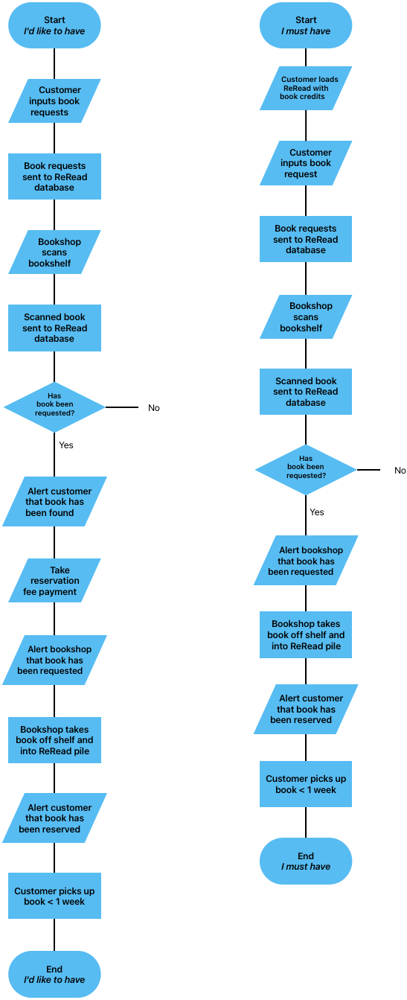

This post dives into my initial plans for how ReRead could become sustainable as a business - how an income revenue might work. This is required to pay for operational costs, things like databases and paying myself so I don't burn all my savings and become homeless. The initial plan was based on a request model (outlined in how ReRead works). We currently have 4 books on request, scaling the number of books requested to the original target of 100 books by September 15th seems feasible if I am in the loop. I would be able to go around charity shops getting the books myself, I’d probably buy the book and then arrange a delivery and sell the book to the person at the cost of the charity shop price + the £1 reservation fee.
To reach sustainability with a £1 fee, I would need to be delivering at least 2,500 books/month to roughly survive. If I can deliver 5% of all books requested (this might be wildly ambitious - but who knows?), then I would need 50,000 active book requests/month. Assuming 10 active books requests per customer - that might be 5000 customers which might be possible in Bristol? 467,000 people lived in Bristol in 2019, so that's 1.1% of Bristol. The other problem is the book supply population. How many books are in the charity shops in Bristol? This would make for another good blog post (I think there are at least 10,0000 in the Redland/Clifton/Park Street area alone and probably at least 5 million in the UK). To hit 2,500 books/month in the Redland area alone would result in me shifting somewhere around 25% of the charity bookshop inventory - this assumes 5% of what is requested can be found in the population of around 10,000 books - something that doesn't seem very realistic
But how is this request model scalable nationwide? Without me in the loop, it starts to fall apart due to relying hugely on the time and efforts of the staff and volunteers in the charity shops. These amazing people are already very busy!After some thoughts and a late night blog post. I decided that perhaps this is not going to work at scale.
Here is the reservation process without me in the loop:
The above outlines two options, they’re pretty much the same but behave slightly differently..
On the left, you request a book but don’t pay anything up front for your request. Only when the book is scanned by the bookshop do you get a notification on your phone saying it has been found. We could potentially supply you with the book price too. If the bookshop gets live feedback on the ReRead scanning app, they could see which books have been requested and enter the price too. So you have a notification, “Great news! Harry Potter has been found, it’s £3.50, please open the app to pay the £1 fee to reserve the book”. You then maybe see this 3 hours later, and pay the fee. The bookshop then gets notified that someone wants to reserve the book. The book may have gone, or the staff may have rotated etc. but if it all works, the bookshop puts the book in the ReRead reservation pile. You then need to go and pick up the book and pay at the charity shop - hopefully within a reasonable time frame (< 1 week) so managing the ReRead pile in the charity shop does not become a pain for them.
The other option is to pre-load your ReRead account with credits and add books to your reserve list that you are committed to buying (you would be able to add a max price you would be willing to give the charity shop). So you’ve reserved a book, the bookshop is scanning their shelves and hit Harry Potter, it tells the bookshop staff/volunteers that the book has been reserved. They then pull it from the shelf, you get a notification and you go and pick it up (hopefully within a week).
There are so many steps!!!
ReRead’s primary revenue source should not be reliant upon the charity shops and be so fragile. ReRead's mission is to help charity shops, not hinder them or add overheads. ReRead's growth will come from recommendations from customers who have had good experiences with ReRead and who tell their friends. A revenue model that makes sense, and works for all parties, book lovers wanting to find their book, charity shops and ReRead needs to be found. To be continued..